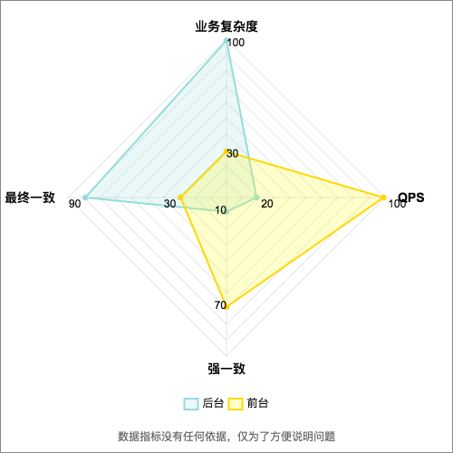
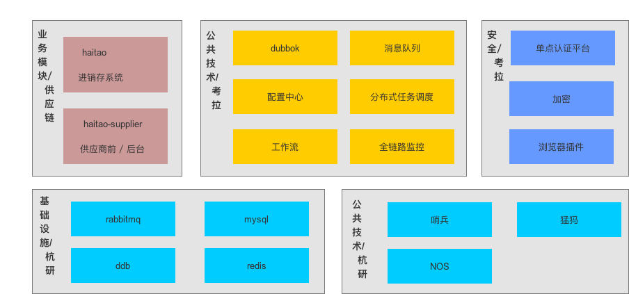
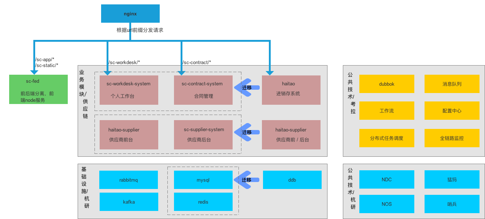
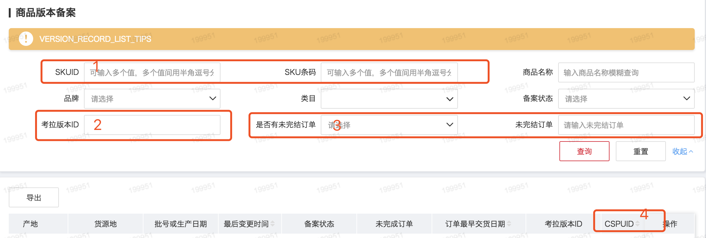
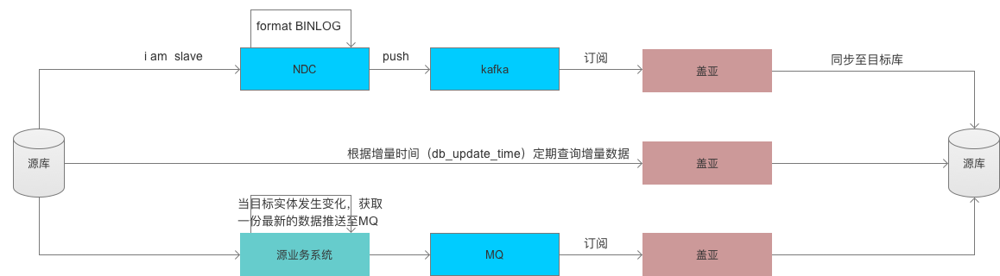
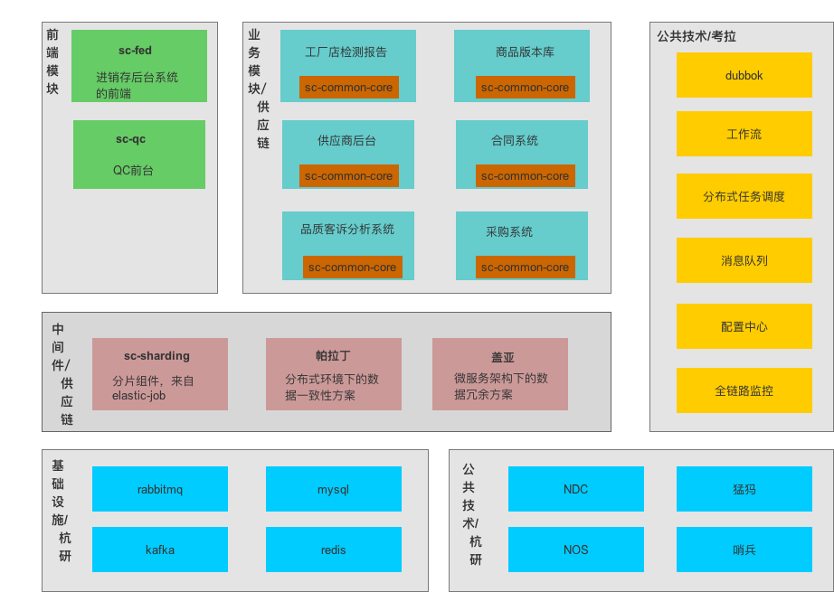
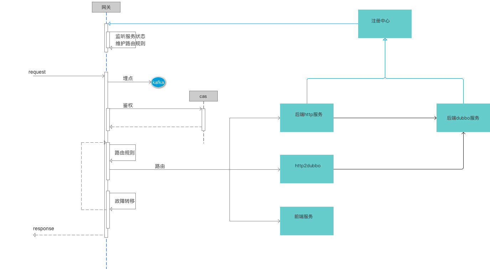
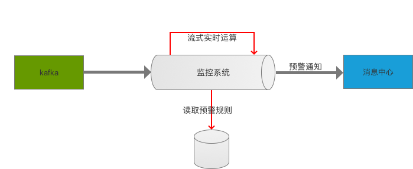
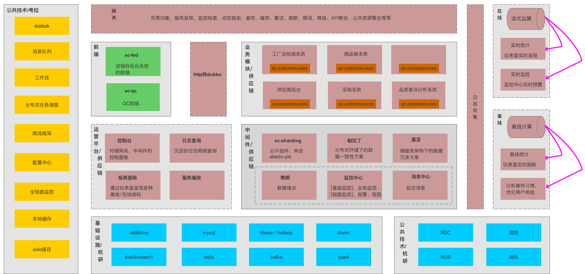

供应链后台架构演进
- 王伟
- 智慧供应链产品研发
- hzwangwei6@corp.netease.com
面向的客户？业务特点？
我们的客户？
- 供应商
- 采购
- 运营
- 财务
- 仓储
- 小店
- QC
- 客服
业务特点？
- 业务复杂度偏高
- 功能瞬息变化，每天都有来自业务方的需求
- 业务边界不明显，一个页面可能有来自N个业务的数据
- QPS低，但RT较高
- 大都数情况下允许最终一致换取实时响应
一张图凸显“我们不一样”
“我们不一样”
前后台还要遵循同样的技术标准或者规范吗？
- 单元测试覆盖率
- 大促封板
- 跨机房
- zookeeper
- ddb
言归正传
- 历史架构
- SOA架构
- 服务化过程中的问题以及解决方案
- 下阶段计划
- 未来展望
2017年上半年架构
2017年下半年SOA架构
服务化过程中的问题
- 代码复用
- jar包升级带来的各种兼容问题
- 分布式事务
- 问题排查
- ... ...
提供丰富的组件解决代码复用问题
- 登录
- 国际化
- 权限
- 流水号
- 异常处理
- 下拉列表
- 分片
- 分布式事务
功能太多、配置太麻烦？
springboot脚手架
屏蔽jar包升级带来的各种兼容问题
Example：solo-rdb客户端升级
- 架构组宣布：nkv、ncr、redis迁移solo
-
业务方：
Jedis、RedisTemplate、spring cache、spring session等更改以及适配
- 脚手架适配，使用方升级pom版本即可，业务无感知
统一父pom
- jar包版本统一管理
- 子工程对jar包冲突说no
如何保证数据一致性?
现状：
大部分不做处理，碰到问题修数据
为什么不用TCC呢？
有别的解决方案吗？
帕拉丁-数据一致性方案
最终一致
/**
* 方法上定义该注解，表示该方法将使用paladin事务来达到数据的最终一致。
* 这里没有定义回滚逻辑，如果最终失败只会告警。
*/
@EnableTransactionSnapshot(name = "saveOrder")
void save(Order order) {
// 减库存
skuService.decreaseStock(order.getSkuId(), order.getAmount(), order.getOrderNo());
// 减资产
assetService.decreaseAsset(order.getUserId(), order.getTotalPrice(), order.getOrderNo());
// 保存至DB
save2db(order);
}
帕拉丁-数据一致性方案
回滚
/**
* 执行正常则事务结束，执行异常走rollback逻辑。
*/
@EnableRollback(rollback = "rollbackForSaveOrder")
@EnableTransactionSnapshot(name = "saveOrder", maxInvokes = 1)
void save(Order order) {
// 减库存
skuService.decreaseStock(order.getSkuId(), order.getAmount(), order.getOrderNo());
// 减资产
assetService.decreaseAsset(order.getUserId(), order.getTotalPrice(), order.getOrderNo());
// 保存至DB
save2db(order);
}
/**
* 固定入参 {@link TransactionContext}
*/
@EnableTransactionSnapshot(name = "rollbackForSaveOrder")
void rollbackForSave(TransactionContext context) {
final Order order = (Order) context.getArgs()[0];
// 回滚还原库存
skuService.increaseStock(order.getSkuId(), order.getAmount(), order.getOrderNo());
// 回滚还原资产
assetService.increaseAsset(order.getUserId(), order.getTotalPrice(), order.getOrderNo());
}
帕拉丁-数据一致性方案
TCC事务
/**
* 执行正常走confirm逻辑，执行异常走cancel逻辑。
*/
@EnableTCC(confirm = "confirmSaveOrder", cancel = "cancelSaveOrder")
@EnableTransactionSnapshot(name = "trySaveOrder")
void tccSave(Order order) {
// 锁定库存
skuService.lockStock(order.getSkuId(), order.getAmount(), order.getOrderNo());
// 锁定资产
assetService.lockAsset(order.getUserId(), order.getTotalPrice(), order.getOrderNo());
}
/**
* 固定入参 {@link TransactionContext}
*/
@EnableTransactionSnapshot(name = "confirmSaveOrder")
void confirmSaveOrder(Order order) {
final Order order = (Order) context.getArgs()[0];
// 减库存
skuService.decreaseStock(order.getSkuId(), order.getAmount(), order.getOrderNo());
// 减资产
assetService.decreaseAsset(order.getUserId(), order.getTotalPrice(), order.getOrderNo());
// 保存至DB
save2db(order);
}
/**
* 固定入参 {@link TransactionContext}
*/
@EnableTransactionSnapshot(name = "cancelSaveOrder")
void cancelSaveOrder(TransactionContext context) {
final Order order = (Order) context.getArgs()[0];
// 解锁库存
skuService.unlockStock(order.getSkuId(), order.getAmount(), order.getOrderNo());
// 解锁资产
assetService.unlockAsset(order.getUserId(), order.getTotalPrice(), order.getOrderNo());
}
复杂的业务查询
涉及四个系统，分页如何做？
宽表JOIN ！！！
盖亚-数据冗余方案
当前架构
下阶段计划
- 公共功能处理: 菜单、权限、下拉框
- 建立有效的问题排查手段应对日益复杂的业务
网关
分布式下拉框列表

数据埋点
- http请求响应
- 业务埋点
- 核心方法调用栈
监控
下阶段整体架构
未来展望
- 2B业务
Thanks
- Q/A
/